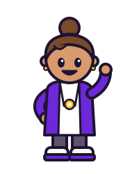

Твой ход
Персонаж, события и следующий шаг.
Игра про деньги и жизнь
Зарплата пришла. Планы уже есть. А жизнь снова подкидывает выбор. Проживи свою финансовую историю — и посмотри, к чему приведут решения.
Ранняя версия · В браузере · В своём темпе

Давай покажу, из чего складывается твой ход. Здесь всё связано: решения, деньги и цель.
Чернильный край · как в приложении
Образцы дизайн-системы в текущем стиле приложения «Чернильный край». Условные данные, статичные примеры — внешний вид ранней версии игры может отличаться.
Персонаж, события и следующий шаг.
Счёт, подушка, доходы и расходы.

Сначала посмотри на цену каждого варианта. А уже потом выбирай, что тебе подходит.
Варианты и их цена — до решения.
Правила простые. Решения — не всегда.
Один ход — один игровой месяц. Ты выбираешь действия, а игра показывает последствия для денег и жизни персонажа.
Выбери персонажа и познакомься с его доходами, обязательствами и целью.
Забери зарплату, разберись с двумя событиями месяца. Реши, что потратить, а что отложить.
Нажми «Завершить ход». Посмотри, как изменились финансы и насколько ты приблизился к цели.
В идеальном плане всё сходится. А в жизни приходится выбирать. Как поступишь ты?
Попробуй прямо здесь
В игре редко бывает одна «правильная» кнопка. У каждого решения — своя цена.
Упрощённый пример для лендинга. Суммы условные, результат не переносится в игру.
Давно не виделись. Поездка стоит 12 000 ₽, а ты собираешь подушку. Что выберешь?
За цифрами — жизнь
Финансовая цель важна. Но комфорт, здоровье, связи и статус тоже влияют на жизнь персонажа. Баланс придётся искать тебе.
Доходы, расходы, долги, инвестиции и страховки складываются в одну картину.
У персонажа есть путь к победе. Твои решения определяют, как ты его пройдёшь.
Последствия ощутимы в партии. Реальные деньги остаются за пределами игры.

Я делаю ТВОЙ ХОД шаг за шагом. Сначала — понятная и устойчивая игра, затем открытое демо и развитие вместе с игроками.
Куда идёт ТВОЙ ХОД
Это направление разработки, а не обещание сроков. Следующий шаг — после проверки предыдущего.
Ранняя версия: персонажи, игровые месяцы, события и цели.
Можно попробовать основу партии и увидеть последствия выбора.Понятный интерфейс, проверка расчётов, стабильности и темпа игры.
Дорабатываю первый опыт и собираю обратную связь.Постоянный сервер и возможность познакомиться с игрой без личного приглашения.
Запуск — после проверки готовности. Открытый демосервер ещё не запущен.Развитие событий, целей и баланса по тому, как люди играют на самом деле.
Приоритеты уточню по результатам демо и отзывам игроков.Перед первым ходом
Можно знакомиться с финансовыми решениями по ходу игры: выбирать, смотреть на изменения и пробовать снова. Это игра с элементами финансовой грамотности.
Нет. Игровой месяц завершается твоим действием, а не по таймеру. Можно играть в своём темпе и делать паузы.
Основной вход — браузер. Игру также можно установить как PWA в поддерживаемом браузере. Telegram — дополнительный канал.
Нет. Ты управляешь финансами игрового персонажа. Игра не подключается к банковскому счёту и не даёт персональных финансовых рекомендаций.
Игра развивается: баланс и интерфейс могут меняться, возможны ошибки. Если что-то непонятно или сломалось, расскажи нам через контакт внизу страницы.
ТВОЙ ХОД · Финансы как игра